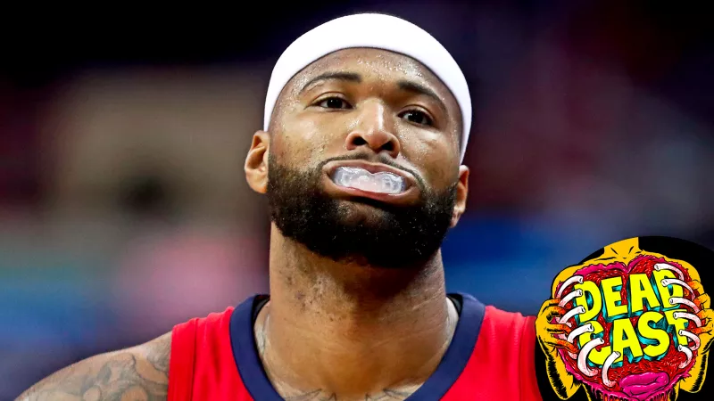
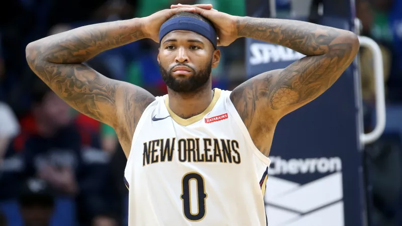
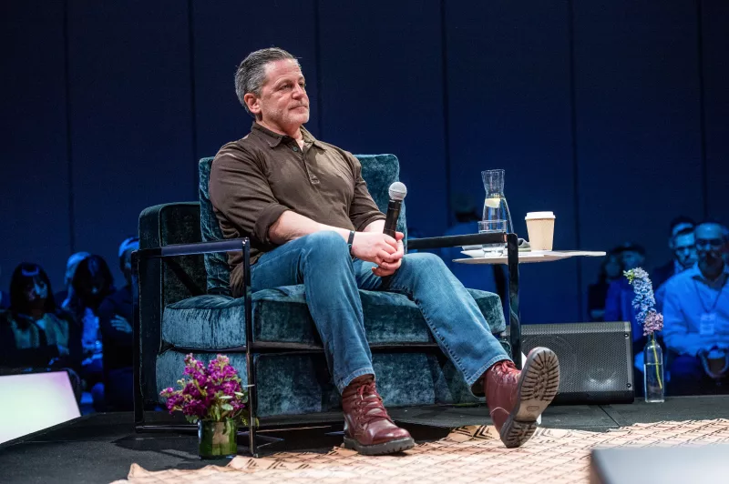

Let's Unplug The NBA Offseason And Plug it Back In.

There is no fan community in American sports that thinks more about how it does what it does than
NBA fans. This isn’t necessarily a compliment, but it’s not really up for debate, either. The
NBA is the best and most interesting league that we’ve got, and as such is pretty excellent to
get excited or upset about in various ways. Over the last few years, the game has evolved into
something more protean and open than ever before while simultaneously being tamed by the bloodless
beauty of the Golden State juggernaut, and as a result the fan discourse has turned inwards—away
from the old soaring jazzwad aesthetic parsings of a few years ago and toward a kind of technocratic
futurism and more recently, as Golden State has cemented itself as both the present and the near
future, in some more grim existential directions.
Oh Come On, The Lakers Passed On DeMarcus Cousins?

It’s undeniably wack that the Warriors, with the signing of DeMarcus Cousins to a one-year, $5.3
million deal on Monday night, have managed to assemble an entire starting five that, when healthy,
could run the Eastern Conference All-Stars off the court. But what makes the earthquake of the
Cousins signing a little stranger than, for example, Kevin Durant’s move to Golden State, is
that—by Cousins’s account at least—no other teams were willing to make him an offer.
Dan Gilbert Wrote LeBron James A Goodbye Letter, And It's Not Insane This Time!

A lot has changed in the eight(!) years since LeBron James left the Cavaliers for the first time.
The huge production of the The Decision was replaced with a grammatically suspect tweet. Cleveland
has a championship. And Cavs owner Dan Gilbert, it seems, has grown out of Comic Sans. With James
heading to the Lakers, all eyes were on Gilbert to see if another tantrum was in the offing.
James, after all, said he still thinks about that 2010 letter. But bygones are apparently bygones,
and Gilbert’s letter, released by the Cavs last night, is alternately fond, sentimental, and
grateful. It also promises the eventual retirement of James’s No. 23.